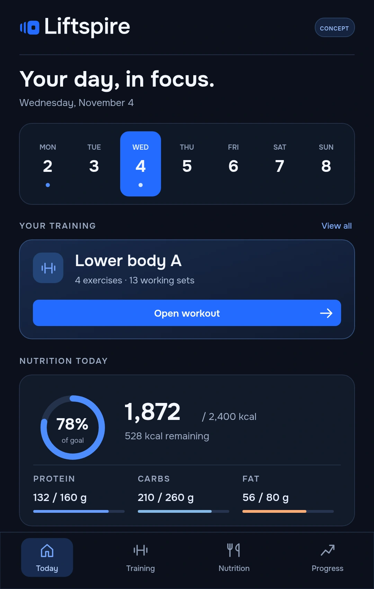

01
Training, in order.
Keep your exercises, sets and working weights together. Built around the sessions you actually do.
Explore workoutsBUILT FOR YOUR NEXT SESSION
A fitness app for regular lifters.
Workouts and nutrition, without the app-hopping.
Workouts, calories, macros and progress.
Less switching. More clarity.
In development. Not available to download yet.

01 — THE ESSENTIALS, TOGETHER
A dedicated place for the numbers
you actually use. Designed for lifters
who already have a routine.
Keep your exercises, sets and working weights together. Built around the sessions you actually do.
Explore workoutsBring calories, protein, carbs and fats into the same daily view as your training. No separate mental checklist.
Explore nutritionYour training history and body-weight entries belong together. A clearer reference for your next session.
What to expectThese are the core areas being developed for launch. Features and interface may change.
02 — A LOOK INSIDE
A fresh look at the essentials.
Explore English interface concepts
created for this preview.
A weekly calendar, your planned training and a nutrition summary — brought into one daily view.
Illustrative interface concepts with sample data — not a shipping app. Final design and features may change.
Interface concept · Illustrative data · Final design may change
03 — THE STRAIGHT ANSWERS
Not yet. Liftspire is in development, and there is no public release available through this site. No early-access registration or confirmed release date is available yet.
Regular strength trainees who already follow their training and nutrition — and want a simpler place to keep workouts, calories, macros and progress together.
Supported platforms and app-store availability have not been confirmed. This preview is a website, not an installable tracker.
Pricing has not been announced. We want Liftspire to be accessible for regular lifters, but there is no confirmed price or subscription offer yet.
No. This website shows illustrative interface concepts, not a working app or screenshots of a finished release. Sample figures are for demonstration only. It does not accept workout or nutrition entries. Technical connection data may still be processed to deliver this website.
This website and its illustrative interface concepts are in English. They show a design direction, not a finished English app release. Launch language availability is not confirmed yet.
LESS FRICTION. MORE FOCUS.
In development. Preview the direction.
No download or sign-up yet. This site does not collect email addresses.